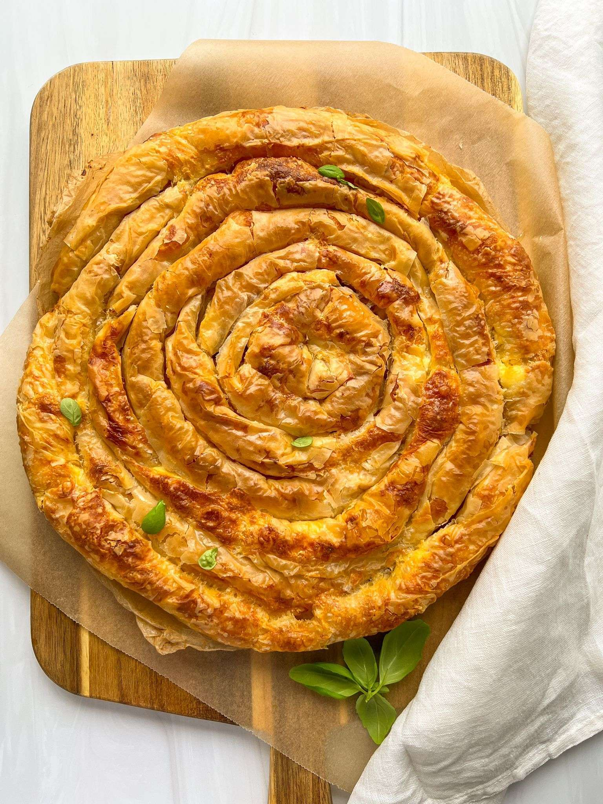

Banitsa

Description
Banitsa is a traditional Bulgarian recipe. It’s flakey & buttery phyllo dough rolled with feta — or Bulgarian white cheese
This dish is also known as Tiropita, Pita, or Burek in many European countries and households and everyone has a slightly different variation of it.
Traditionally Banitsa is enjoyed with some extra yogurt on the side but you are more than welcome to enjoy it on it's own. There are sweet versions of this dish with apples or pumpkin.
Ingredients
- 5 eggs
- 350 grams of Bulgarian white cheese
- 1.5 cups of plain bulgarian yogurt
- ½ teaspoon of baking soda
- 1 cup of butter (melted)
- 1 pack of Phyllo dough sheets
Steps
- Thaw the phyllo sheets as per the package directions and start preparing all of the ingredients before you unroll the thawed phyllo sheets. In a bowl break apart the feta with a fork, add the eggs and mix. Add the yogurt and baking soda and mix. Melt the butter and set it aside in a separate bowl.
- Unroll the thawed phyllo sheets and cover with a towel or a slightly damp towel as they dry quickly. Place one sheet on your work surface and brush with butter, place another sheet on top of the first sheet and butter it as well. You can now add a few big spoonfuls of the yogurt-feta mixture onto the buttered phyllo sheets and spread it around. You should have a thin layer of the yogurt-feta mixture.
- Tightly roll up the phyllo sheet long side up to form a long rope. Now roll that piece into a spiral shape and place it in the middle of your lined and buttered baking dish. I lined mine with parchment paper and buttered the top to prevent sticking. Repeat this exact step with the remaining phyllo sheets and wrap each one around the centre phyllo sheet to make a coiled pattern until the baking dish is full. You should have a total of 8 rolls that are filled with the feta-yogurt mixture since there are 16 phyllo sheets in a pack and we use 2 sheets per roll. Side note: you can also place the phyllo rolls side by side lengthwise in a baking dish instead of rolling them around one another if that's easier on you as well.
- Once you have all the rolls wrapped around one another in the baking dish you can now lightly brush the top of the Banitsa with melted butter and bake at 400F until flakey and golden for about 45-50 minutes depending on the oven. It should be nice and light and golden on the top and bottom. I bake mine uncovered on the middle rack. Let it cool a it and enjoy.